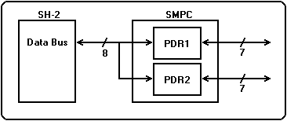
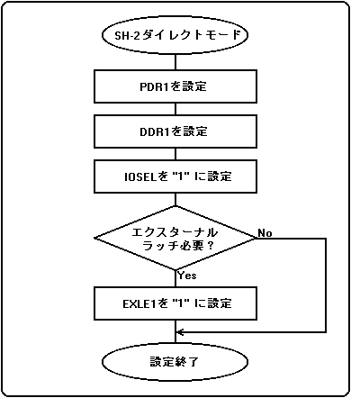

★HARDWARE Manual
★SMPCユーザーズマニュアル
★HARDWARE Manual
★SMPCユーザーズマニュアル
図3.21 SH-2ダイレクトモードのブロック図

SMPCコントロールモードでアクセス可能なスピードよりも高速なアクセスが要求されるペリフェラルをコントロールするとき
ペリフェラルに対して、データ出力が必要なとき
エクスターナルラッチを必要とするペリフェラルに対してアクセスが必要なとき
SMPCが対応していないペリフェラルに対してアクセスが必要なとき
 |
上記、特長のどれにも該当しない場合には、 「SH-2ダイレクトモード」を使用してはいけません。 |
|---|
図3.22 SH-2ダイレクトモードの設定例

★HARDWARE Manual
★SMPCユーザーズマニュアル